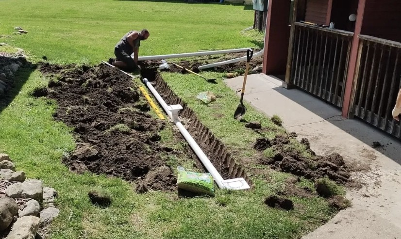
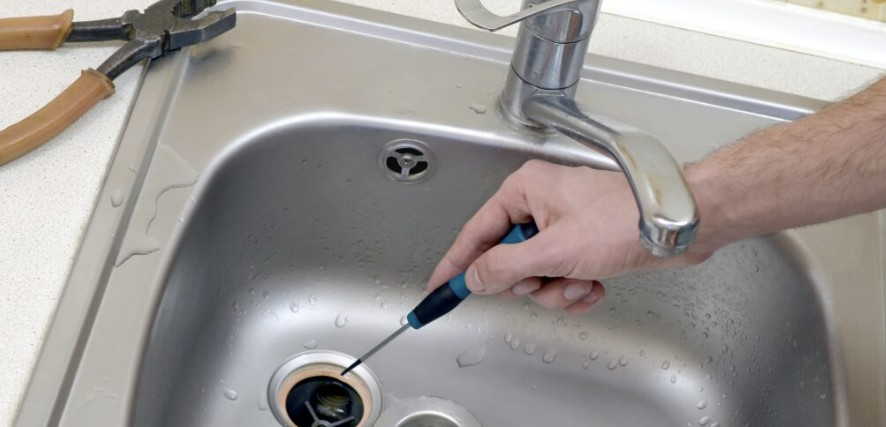
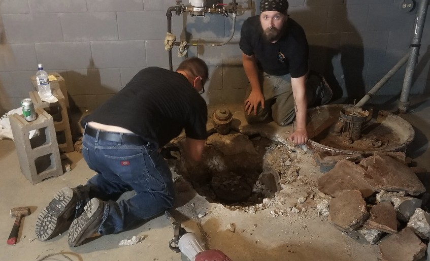
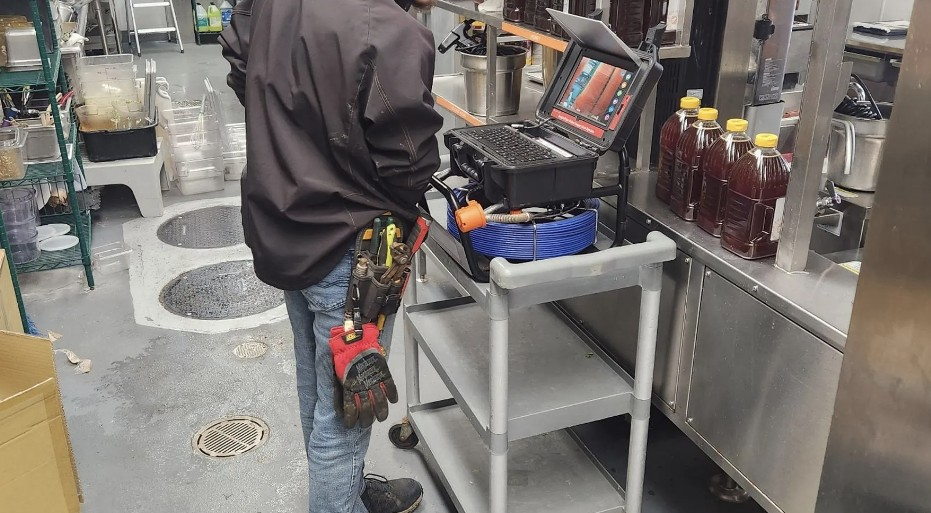
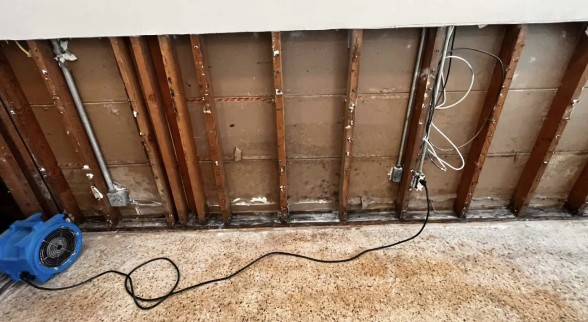
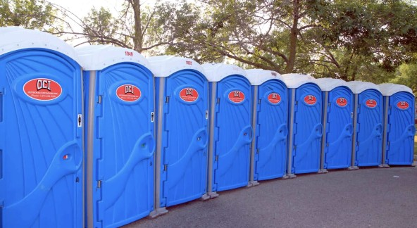

What We Do
From emergency drain cleaning to sewer line replacement — Doctor Rooter 911 has the equipment, experience, and licensed professionals to solve any plumbing problem fast. We're your plumber in Madison, Milwaukee, Janesville, and Beloit.
From leaking faucets to burst pipes, our licensed plumbers handle all types of plumbing repairs for residential and commercial properties across southern Wisconsin.
We diagnose the root cause — not just the symptom — and give you an honest, upfront quote before any work begins. No surprise charges. No repeat visits for the same problem.


Slow drains and clogs are more than an inconvenience — they can lead to backups, water damage, and costly repairs if left untreated. Doctor Rooter 911 uses professional hydro-jetting and cable snaking equipment to clear even the most stubborn clogs completely.
We clean drains in kitchens, bathrooms, basements, laundry rooms, and commercial facilities — fast, clean, and done right the first time.
A blocked or slow main sewer line is a serious problem that can cause sewage to back up into your home. Doctor Rooter 911 specializes in main sewer line cleaning using powerful high-pressure jetting equipment that removes roots, grease buildup, scale, and debris completely.
We serve residential and commercial sewer systems in Madison, Milwaukee, Janesville, and Beloit — and we're available for emergency sewer cleanouts 24 hours a day, 7 days a week.


Stop guessing what's going on underground. Our high-definition video camera inspection technology lets us see exactly what's happening inside your sewer and drain pipes — identifying cracks, root intrusion, offset joints, and blockages with precision.
Camera inspections are ideal before buying a home, after a major backup, or whenever you want to know the true condition of your plumbing system. We provide detailed findings and honest recommendations — no unnecessary repairs.
📷 Our camera inspection shows you exactly what we see in real-time — no guesswork, no unnecessary excavation.
Water damage can escalate into mold, structural damage, and thousands of dollars in repairs if not addressed quickly. Doctor Rooter 911 responds fast to extract standing water, dry affected areas, and mitigate damage before it spreads.
Whether it's a burst pipe, sewer backup, basement flooding, or appliance failure — we have the equipment and expertise to protect your property. Available 24/7 for water damage emergencies.


Doctor Rooter 911 provides reliable porta potty rental throughout southern Wisconsin for events, construction sites, outdoor projects, and more. Clean, well-maintained units delivered and picked up on your schedule.
We serve contractors, event coordinators, property managers, and homeowners who need temporary sanitation solutions. Contact us for pricing and availability.
Call Doctor Rooter 911 now — available 24/7 for emergencies and same-day service requests.
CALL (608) 244-9456Answers to common questions homeowners ask about plumbing repair, drain cleaning, and sewer service in Madison and southern Wisconsin.
Yes. Doctor Rooter 911 provides 24/7 emergency plumbing and drain cleaning in Madison, Milwaukee, Janesville, and Beloit. When you call our local numbers, a real person answers and we dispatch a licensed plumber right away so you are not waiting hours for help.
We clean kitchen sinks, bathroom sinks and tubs, showers, floor drains, laundry drains, commercial drains, and main sewer lines. Our equipment includes cable machines and high‑pressure hydro‑jetting so we can remove grease, tree roots, and heavy buildup.
If you have multiple drains backing up at once, gurgling toilets, sewage smell in the home, or sewage coming up in a basement drain, the problem is usually in the main sewer line. We can perform a TV camera inspection to confirm what is happening and clean the line from the proper access point.
Yes. We provide plumbing, drain cleaning, and sewer service for single‑family homes, multi‑family properties, restaurants, retail businesses, industrial facilities, and more throughout southern Wisconsin.
Response times depend on your location and current call volume, but in many cases we can provide same‑day or within‑the‑hour service for emergencies in Madison, Milwaukee, Janesville, and Beloit. Call the number for your city to get the fastest response.